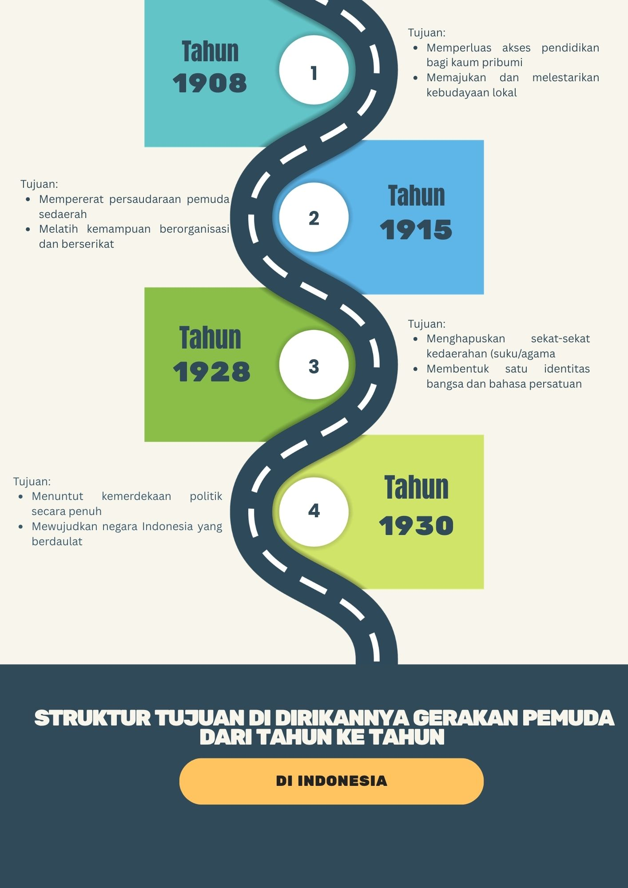

Latar Belakang Gerakan Pemuda
Gerakan Pemuda di Indonesia dilatarbelakangi oleh penderitaan rakyat akibat penjajahan Belanda, seperti diskriminasi, ketidakadilan, dan terbatasnya kesempatan memperoleh pendidikan. Pada awal abad ke-20, muncul golongan terpelajar akibat berkembangnya pendidikan modern dan penerapan Politik Etis. Para pemuda mulai menyadari pentingnya memperjuangkan hak-hak rakyat serta membebaskan bangsa Indonesia dari penjajahan. Selain itu, perkembangan pergerakan nasional di berbagai negara turut memberikan inspirasi bagi kaum muda Indonesia untuk memperjuangkan kemerdekaan.
Faktor lainnya adalah munculnya organisasi pergerakan nasional, seperti Budi Utomo yang berdiri pada 20 Mei 1908, serta berbagai organisasi pemuda dari daerah yang berbeda. Pada awalnya, organisasi-organisasi tersebut masih berfokus pada daerah dan kelompok masing-masing. Namun, para pemuda kemudian menyadari bahwa persatuan merupakan kunci untuk mencapai kemerdekaan. Kesadaran tersebut mendorong lahirnya semangat persatuan nasional yang mencapai salah satu puncaknya melalui Kongres Pemuda II pada 27–28 Oktober 1928 dan menghasilkan Sumpah Pemuda.
Tokoh-Tokoh Gerakan Pemuda
- Soegondo Djojopoespito
- Mohammad Yamin
- Wage Rudolf Supratman
- Soenario Sastrowardoyo
Ketua Kongres Pemuda II pada tahun 1928.
Tokoh yang merumuskan gagasan persatuan bangsa dan menyusun rumusan Sumpah Pemuda.
Pencipta lagu Indonesia Raya yang diperdengarkan pada Kongres Pemuda II.
Tokoh yang menyampaikan pidato mengenai pergerakan pemuda dan persatuan nasional.
Struktur Tujuan Di Dirikannya Gerakan Pemuda
